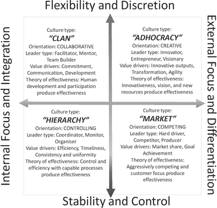

1 Introduction
Empirical studies of large-scale agile have instigated academic debate regarding transformation challenges and agile principles applicability in a large-scale context [1–3]. Studies of Continuous Software Engineering and DevOps [4, 5] are also prime examples of how the software development domain is approaching aspects of agility beyond software development teams. Continuous activities related to budgeting, product management and business-value-related decisions are made in shorter cycles to enable research and development (R&D) capability for rapid delivery and customer experimentation [5].
Meanwhile, agility (i.e. organisational adaptability and flexibility [6, 7]) is impacting contemporary business strategies and practices for managing product programmes and business portfolios also in a non-IT context. Strategic business management [6] views agility as an organisational capability related to management under deep uncertainty, resource fluidity and continuous business model renewal.
Large-scale agile development [1, 2] and enterprise agility [6, 8] can be viewed through multiple lenses. These lenses may include but are not limited to agile budgeting, agile manufacturing, agile production, agile strategic management, agile business models, agile culture and organisational theories related to agility. While many principles of enterprise agility can be found in the literature (e.g. Beyond Budgeting [9], Lean Enterprise [10] etc.), empirical studies [1–3, 11, 12] have indicated that it is still rather challenging for most organisations to perform such a holistic and sustainable transformation. Why is transformation so hard? Given that enterprise agility involves not just software development, but the whole organisation, investigations of enterprise agility must address several aspects related to business, development and operations [4]. Leadership and cultural aspects have especially been identified as key challenges in earlier studies of large-scale agile transformations, e.g. [2, 3]. This paper explores enterprise agility by investigating transformation activities in a large organisation in the higher education domain. For this investigation, we focus particularly on transformation, leadership and cultural aspects related to enterprise agility. We apply the Competing Values Framework (CVF) [13] to analyse characteristics of organisational culture and its implications to enterprise agility transformation. As the investigated case organisation operates in the higher education domain, this work contributes to understanding how agile methods and principles are interpreted and adapted in non-IT domains. One of the key contributions of this paper therefore is that it provides empirical evidence of challenges in non-IT agile transformation. Another key contribution is to introduce ideas and concepts from strategic management into the debate around non-IT agile transformation.
2 Background and Related Work
Large-scale agile development is becoming increasingly relevant to projects and product programmes in many industrial domains. Recent studies of adopting agile principles in large organisational contexts have indicated both organisational challenges and success factors related to organisational transformation towards agile [2, 3]. However, investigations of large-scale agile transformation are often focused on aspects of software development projects. Many studies of large-scale agile development focus on agile development activities that involve multiple teams (typically more than two teams). According to Dingsøyr et al. [1], ‘enterprise agile’ is more than simply considering multiple teams and requires a more comprehensive view of the business.
This paper aims to study agility from this more comprehensive point of view. It applies business management and organisational culture definitions and models to analyse enterprise agility. Enterprise agility views agility beyond software i.e. as a holistic ‘transformation of organisations’, including business, operations and cultural aspects. Several authors have suggested ‘lean thinking’ [4, 14] as a useful lens for analysing enterprise agility. Lean production principles, made famous by Toyota Motor Company, have inspired also many agile software development researchers. Recent studies on ‘continuous delivery’, ‘DevOps’ and ‘experimentation-driven development’ [4, 5, 14] have provided more evidence on how business, development and operations can benefit from establishing continuous integrative activities throughout a value stream.
The research in this paper is largely motivated by an increased understanding of commonly addressed agile practitioner’s challenges related to people’s ‘mindsets’ and ‘organisational culture’. However, research in this area is also considered to be very challenging, due to its multidisciplinary aspects. Challenges are also related to empirical validation of enduring (sustainable) agile transformation, rather than a short-term transient phase of transformation. In practice, understanding organisational agile transformation requires a comprehensive investigation of organisational culture, business strategies, technologies and architectures, organisational structure and processes, business models and how they can be efficiently integrated and synchronised into contextually relevant continuous incremental cycles.
Agile frameworks, such as AgilePfM [15], SAFe [16] and LeSS [17] are nowadays increasingly adopted in large-scale software-intensive product development. These frameworks can provide a useful baseline for coordinating large-scale development and delivery cycles. Large-scale transformations, however, typically involve many contextual and cultural variations that have to be addressed by local change management activities. Moreover, different industry domains, such as public sector and non-IT businesses may have to adapt framework terminology and principles that originate from the software development context. Consequently, some organisations are increasingly leveraging aspects of bottom-up innovation, communities of practice and experimentations related to agile transformation [3].
The benefits of understanding organisational culture have been addressed by many authors in the business management discipline [13, 18, 19]. Cultural characteristics may either accelerate or hinder transformation towards enterprise agility. Meanwhile, the ‘ability to change organisational culture’ has been identified as one of the key factors related to large-scale agile development [2]. A recent trend of adapting agile and lean principles to large-scale projects and organisational level e.g. ‘enterprise agile’ [8] and ‘Continuous *’ [4] (i.e. ‘BizDev’ and ‘DevOps’ activities) clearly necessitates a deeper understanding of the cultural change required, and learning new ways to lead transformation.
2.1 Defining Enterprise Agility
In terms of being able to analyse challenges related to transformation, we first need to define ‘the goal of agile transformation’, i.e. what are the organisational characteristics that are associated with enterprise agility. The agile software development literature has indicated various interpretations of agility in software development. Laanti et al.’s [20] review of definitions indicated that there is currently no uniform definition for agility in agile software development nor in agile project management. Consequently, they state that it is increasingly important that researchers and practitioners themselves carefully specify what they mean by agile. Since our research is conducted in a non-IT context we focus primarily on how the management discipline has defined agility (Table 1). Moreover, we believe that incorporating business management definitions is useful in investigations related to large-scale software development. However, there is no uniform definition for agility in business management either.
Table 1.
Dimensions of enterprise agility
Author | Dimensions of enterprise agility |
|---|---|
Teece et al. [6] | Dynamic capabilities: Sensing - Identification, development, co-development, and assessment of technological opportunities (and threats) in relation to customer needs (the “sensing” of unknown futures) Seizing - Mobilization of resources to address needs and opportunities and capture value from doing so (“seizing”) Transforming - Continued renewal (“transforming” or “shifting”) |
Overby et al. [8] | Sensing and responding capabilities: Sensing environmental change – competitive market opportunities; evolving conditions; environmental change AND Responding Readily – seize with speed and surprise; respond efficiently and effectively |
Doz et al. [7] | Strategic meta-capabilities: Strategic sensitivity: the sharpness of perception of, and the intensity of awareness of and attention to, strategic development. Anticipating, experimenting, distancing, abstracting, reframing Leadership unity: the ability of the top team to make bold, fast decisions, without being bogged down in top-level ‘win-lose’ politics. Dialoguing, revealing, integrating, aligning, caring Resource fluidity: the internal capability to reconfigure capabilities and redeploy resources rapidly. Decoupling, modularizing, dissociating, switching, grafting |
Beyond Budgeting [22] | Leadership principles: Purpose – Engage and inspire people around bold and noble causes; not around short-term financial targets Values – Govern through shared values and sound judgement: not through detailed rules and regulations Transparency – Make information open for self-regulation, innovation, learning and control: don’t restrict it Organisation – Cultivate a strong sense of belonging and organize around accountable teams; avoid hierarchical control and bureaucracy Autonomy – Trust people with freedom to act: don’t punish everyone if someone should abuse it Customers – Connect everyone’s work with customer needs; avoid conflicts of interest Management processes: Rhythm – Organise management processes dynamically around business rhythms and events; not around the calendar year only Targets – Set directional, ambitious and relative goals: avoid fixed and cascaded targets Plans and forecasts – Make planning and forecasting lean and unbiased processes: not rigid and political exercises Resource allocation – Foster a cost-conscious mindset and make resources available as needed; not through detailed annual budget allocations Performance evaluation – Evaluate performance holistically and with peer feedback for learning and development; not based on measurement only and not for rewards only Rewards – Reward shared success against competition; not against fixed performance contracts |
Enterprise agility as a research topic has been debated in management literature for at least three decades, although it is also referred to nowadays as ‘flexibility’ to distinguish it from the rise of the ‘agility’ terminology [6]. Consequently, in this paper we use those two terms interchangeably, and when referring to agile software development specifically then we are explicit about it. The business management literature identifies four dimensions of agility: economic, organisational, operational and strategic [21]. We consider these dimensions to be complementary and useful viewpoints for analysing enterprise agility. The economic agility viewpoint has been addressed, for example, in conjunction with theories for management of financial buffers against demand uncertainties or external market shocks. The operational agility viewpoint deals with aspects of manufacturing system flexibility, e.g. ability to adapt the manufacturing system to different environmental conditions and a variety of product features. Agile software development literature referenced by Laanti [20] captures especially operational agility aspects related to software component development, e.g. management of rapidly changing business requirements and iterative delivery practices. The organisational agility viewpoint deals with models of organisation (e.g. organisation of individuals and teams) and labour flexibility in rapidly changing environment [21].
Business management literature views strategic agility through culture [19], leadership [7] and dynamic capabilities [6] that enable an organisation to sense and seize opportunities, manage deep business uncertainty and to be able to perform rapid changes in the business environment. According to Toni et al. [21] strategic flexibility (or agility) consists of four distinct categories: (1) speed and variation of the competitive priorities, (2) range of strategic options, (3) rapidity of movement from one business to another, and (4) variety of the possible new businesses.
Continuous business model renewal [7] and continuous business model ‘stress testing’ [23] are considered as important elements of leadership processes related to enabling enterprise agility. In addition to continuous evaluation of risks and uncertainties related to the business model, Bowman et al. [23], Doz et al. [7] and Teece et al. [6] have addressed the leadership role in conjunction with business model innovation and ability to continuously evaluate opportunistically alternatives related to elements of a business model [24]. Table 1 summarises their viewpoints on dimensions of agile capabilities and leadership activities for enabling enterprise agility.
2.2 Organisational Culture
Schein [19] and Cameron et al. [13] have both addressed the impact of leadership in conjunction with the evolution of an organisational culture. According to Schein [19] leadership impacts largely on existing culture and is the key element for shaping the new culture. Relationships between agile methods and culture have been investigated also in various case studies [25, 26].
In this study we apply the Competing Values Framework (CVF) [13] to identify the characteristics of agile culture, and to represent the existing organisational culture of the case organisation. Figure 1 illustrates the CVF dimensions and four major culture types: (1) the hierarchy culture, (2) the market culture, (3) the clan culture, and (4) the adhocracy culture. According to Cameron et al. [13] most organisations have one or two most dominating culture types and CVF allows the diagnosis of an organisation’s cultural profile.

Fig. 1.
Competing Values Framework [13]
Based on our brief review of papers that have applied CVF in agile software development [27, 28], agility is typically associated with the ‘adhocracy’ culture, the top-right quadrant of the CVF model [27] in Fig. 1. However, as far as we know, there is no single preferred or idealistic profile for agile culture, because different organisations and business situations require multiple different cultural traits to exist in parallel for the organisation to be effective [26].
Organisational values, closely related to organisational culture, have often been addressed in conjunction with agile methods. For example Beck and Andres [29] stated that introducing Extreme Programming (XP) in organisations with values such as “secrecy, isolation, complexity, timidity, and disrespect” is ineffective and moreover, “will cause trouble rather than improvements”. Consequently, transformation towards agile necessitates understanding of organisational values that are part of the organisational culture. Organisational culture has often been identified as one of the main challenges in adoption of agile values and principles. Consequently, organisations may benefit from analysing the existing organisational culture even before they decide to start their transformation journey towards agile [18].
2.3 Summary of Approaches for Achieving Enterprise Agility
This section summarises approaches for achieving large-scale enterprise agility as described in related literature. Approaches are not exclusive and they may co-exist in organisations.
Scaled Framework-Driven Approach (Incremental Diffusion of Operational Agility).
The scaled framework-driven approach achieves agility through incremental adoption of agile methods and frameworks e.g. agile maturity models [30], agile management frameworks and agile development methods (DSDM, AgilePM, SAFe, Scrum, LeSS, Kanban, Scrumban etc.). These frameworks focus often on describing operational aspects of the organisation, e.g. how to orchestrate development functions, optimising flow value stream, and re-organising value creation activities and delivery cycles. Olsson et al. [31] stated that software enterprise transformation is typically initiated by individual R&D teams, that start exploring agile methods usage in team-level activities. The next steps in transformation are characterised by increased integration, and activities and interactions between verification and validation, programme management and customer. Frameworks such as AgilePfM [15], SAFe [16] and LeSS [17] aim to provide guidance on how to manage portfolios, projects and the collaboration of multiple agile software development teams. However, as pointed out by Paasivaara et al. [3] and Dikert et al. [2], empirical evidence on the validity of these frameworks is largely missing.
Business-Driven Approach (Strategic Orientation Towards Agility).
The business-driven approach takes a business level viewpoint such as business model stress testing [23] and continuous business model renewal [7, 32]. This could mean for example strategic orientation towards leveraging state-of-the-art digital services and architectures for doing business and/or continuously evaluating alternative revenue streams and channels for deploying customer value. The main difference between this and the ‘scaled framework-driven approach’ is that rather than focusing on better-faster-cheaper development i.e. ‘doing the thing right’, the business-driven approach views agility more broadly through organisational strategy and business model flexibility i.e. ‘doing the right thing’. Doz et al. [7] pointed out that “many companies fail, not because they do something wrong or mediocre, but because they keep doing what used to be the right thing for too long, and fall victim to the rigidity of their business model”. This viewpoint of agility is valid in particular for organisations in highly competitive, non-regulated and global markets.
Sustainable Agility Approach (Cultural Orientation Towards Agility).
The sustainable agility approach addresses agility through a cultural understanding and orientation in adoption of agile values for sustainable operational excellence. The link between sustainable operational excellence, culture and agility has been addressed by Carvalho et al. [18]. Continuous and sustainable aspects of transformation, have been addressed also in conjunction with lean principles [14]. This approach focuses on orientation towards a holistic viewpoint, sustainability and long-term objectives in transformation. Organisational culture is seen as the main point of interest in planning and orchestrating transformation activities. While this approach may leverage also business- and framework-driven approaches in transformation they are seen as secondary to, for example, people’s behaviours and values that are appreciated in all transactions for example with customers and between internal stakeholders. This approach can be characterised by the notion that enduring enterprise agility is achieved as a result of culturally aligned, highly motivated, and empowered people working together towards a common cause, rather than as a result of business model renewal or adoption of an agile method or framework. Continuous business model renewal and adoption of an agile framework are outcomes of transformation rather than causes of enterprise agility.
3 Case Organisation and Study Design
The case organisation is large and distributed; it has approximately 9000 employees. Organisational change in the case organisation involves many areas, such a new strategy and various change programmes that are characterised by organisational adaptability, agility and operational efficiency. In this paper, we focus on change related to the design and development of curriculum elements (text, video, books etc.). We define the unit of analysis as the module production process. Module production activities involve multiple organisational units and stakeholders from academic faculties to media production functions. Module production can be considered as the primary channel for delivering value to the organisation’s internal and external stakeholders.
Data collection was carried out in a five-month period in 2017–2018, and included meetings with managers in charge of module production and participation in team-work sessions referred to as ‘agile discovery sprints’. In addition, internal reports and plans were available, which provided a broader understanding of the research context and evidence of the organisational strategy, culture, transformation actions and objectives of the organisational transformation.
‘Agile discovery sprints’ work sessions took place between November and December 2017. Agile discovery sprints involved 37 people from various module production roles who had volunteered to study and experiment with agile methods use in the organisation. Volunteers were assigned to five teams to explore how agile development methods and principles could be applied in the module design and production process. Teams were following the Google design sprints [33] for planning and demoing findings within and between teams. Each team had a predefined theme/topic related to agile methods and principles. Topics were: (1) AgilePM, (2) Scrumban, (3) Kanban, (4) Agile Principles & Values, and (5) Agile Teams and Organisation. People in these teams were empowered to make decisions related to how they worked and what aspects they considered most interesting, e.g. most challenging or most prominent approaches for increasing agility in the organisation.
Discovery sprints were facilitated by two agile change agents i.e. facilitators that organised and coordinated agile discovery sprint activities, including inviting volunteers to participate, assignment of people in teams, and definition of topics for each team. Facilitators were involved in each team’s sessions throughout the increment. Facilitators made sure that teams were able to progress in their assigned themes and they acted as agile coaches providing answers to questions related to agile methods and principles. The chosen facilitators were also experts in module design and production, and hence, they had good understanding of existing processes, organisational structures and the main constraints. One of the facilitators was interviewed after the first two-month increment. The semi-structured interview (of about an hour) focused on understanding the key impacts and results, challenges and lessons learned during the discovery sprints.
Researchers (authors of this paper) participated altogether in 16 discovery sprint sessions (each session lasted 1–2 h) and made field notes and took pictures and videos that were further used in qualitative analysis [34]. Researchers also participated in team activities and discussions both online and face-to-face. Hence, the researchers impacted the outcomes of the working sessions. Each team used a Trello board for coordination of the team’s tasks, communication and consolidation of working material, documents, discussions and so on. All material in the Trello boards (such as cards and attachments) were also used in the data analysis.
Thematic analysis [34] was applied in relation to the research question ‘What are the challenges related to agile transformation in this case organisation?’ The analysis proceeded in phases. After data collection, the first author of this paper performed a consistent reading of all collected data and identified the main patterns related to transformation challenges. These patterns (themes) were further validated by discussing with other authors who also participated in data collection. CVF culture types (Fig. 1) definitions were used as a lens for analysing aspects of organisational culture in the case organisation and possible implications related to transformation challenges. In addition to our empirical data, this analysis also drew on an internal report that had been commissioned to characterise the organisation’s culture1.
4 Findings
The case organisation had recently launched a new strategy that emphasised ‘organisational adaptability’ and ‘customer orientation’. Transformation urgency was justified by increased competition and operational efficiency. A key part of the latter motivation was a reduction in costs associated with module production. Hence, the enterprise agility changes we investigated were focused mainly on internal operational agility improvement (e.g. ‘doing the thing right’) rather than strategic orientation towards sensing and seizing new business opportunities and threats (e.g. ‘doing the right thing’).
Considering the organisation’s culture, a complex organisational structure and multiple management layers had created siloes and barriers between people working in different units. Organisational culture was also characterised by ‘tribes’ that sometimes had difficult and suspicious relationships. In this study organisational barriers could be identified between the module production unit and content providers (one production manager commented that “we worry about the buy-in from module teams… people choose to attend or not”). Module design and production requires close collaboration between curriculum content creation (e.g. learning modules) and colleagues whose role it is to prepare materials for presentation, e.g. editing books, website design and maintenance, processing of digital media content and management of budget and quality of the production process. Facilitators’ and sprint volunteers’ comments throughout the collected data emphasised the organisation as ‘highly hierarchical’. Hence, we consider the most dominant existing culture in the case organisation currently to be the hierarchy culture, i.e. bottom left in Fig. 1. Hierarchy culture was most clearly manifested by existing strong reliance on defined processes, bureaucratic management practices and organisational structures. The internal report on organisational culture had also indicated that many elements of bureaucratic processes characterise the way of working in the case organisation.
Although the dominant culture was hierarchical, the culture report indicated the existence of the ‘clan’ culture (top left in Fig. 1). Employees often bypassed formal procedures and used their personal networks to get tasks done, which could indicate the existence of underlying elements of the clan culture. Both clan and hierarchy cultures indicate that the case organisation currently values stability, internal focus and integration more than external focus and flexibility. Although not part of the module production process, several team members mentioned that some sub-units in the wider organisation, such as IT, had already adopted elements of market and adhocracy culture. Consequently, although we could not find any concrete evidence of market and adhocracy culture in our study, they might exist as sub-cultures in smaller units and teams. Problems may however arise when these agile teams have to collaborate with less agile hierarchical organisational units. We elaborate more on this problem in the next section that focuses on transformation challenges.
4.1 Transformation Challenges
The most commonly-encountered transformation challenges referred to by team members and facilitators are consolidated into four themes that we elaborate in this section. The main challenge as we perceived in this study is related to the prevailing hierarchical culture. A need for organisational transformation towards ‘adaptive organisation and culture’ had been communicated the year before our study was conducted, as one of the strategic objectives. Consequently, it has been largely initiated as a top-down organisational activity. We could already see multiple top-down activities such as transformation programmes and people nominated in change management positions. This is an indication of ‘command and control’ i.e. a prevalent top-down approach for coordinating transformation. However, challenges related to Theme 1 (below) indicated that currently these top-down activities were not properly aligned and coordinated.
The discovery sprint activity that we studied was a clear indication of an initiative to enable also bottom-up activity for agile transformation. In CVF terms this would indicate a transition towards an adhocracy culture. The main challenge, however, focuses on how to enable a sustainable bottom-up activity in a prevalent hierarchy culture. We believe that transformation towards an adhocracy culture would have to demonstrate quickly both tangible improvements and a positive atmosphere among employees and managers in all levels of the organisation. In addition, as highlighted by one of the facilitators there is an urgent need for establishing an ‘organisational brain’ i.e. a learning repository - a community and body of knowledge that is able to keep a record of innovations and best practices related to agile transformation: “When you talk to people, tacitly there is loads and loads of knowledge there, but we are not leveraging it”. Online tools and communities were considered as important enablers for establishing this kind of activity. We identified the following challenges related to organisational transformation in the case organisation:
Theme 1: Synchronising Separate Change Programmes and Activities.
Although the case organisation had already launched multiple activities related to new tools and processes that would help it to become more agile, these activities needed a stronger top-down effort for synchronisation, alignment and continuous sharing of learnings and best-practices. “Current organisation has not been ready for the way we orchestrate change activities to work together. The governance has not been in place”.
Theme 2: Leveraging Incrementally Both a Bottom-Up Approach and Knowledge from Local Experts in the Transformation.
‘Experimental test and learn’ and ‘scale up incremental’ approaches were considered to be important in order to enable the transformation to have a sustainable change effect in the organisation. However, as noted in our data, senior management was expecting a faster schedule and action plan, that would indicate a hastier ‘big bang’ approach in transformation. Consequently, one of the main challenges is to align the top-down (hasty) and bottom-up (slow) transformation approaches.
Theme 3: Establishing Long-Lasting Module Production Team Structures, Agile Roles and Empowerment of Teams.
Discovery sprint session results indicated that the current organisational structure was based largely on functional siloes i.e. different production specialists, content providers, infrastructure and support units were all operating rather independently. Module design and production requires a co-operation between multiple units. Hence, current ways of working were considered to have multiple operational disadvantages such as waiting, bureaucracy and overproduction of the content. Cross-functional longer-lived team structures were considered as a potential solution for the problem. Agile methods such as AgilePM, Scrum, Kanban and Scrumban outline guidelines, however adapting their practices and terminology to non-IT module production was considered to be challenging. The most acute problems were related to which agile method to adopt, how to form teams, how to redefine old roles and define new roles and how to ensure empowerment of teams. A prevailing hierarchical culture also caused challenges to enable empowerment of people and teams.
Theme 4: Adoption of the Mentality for Continuous Product Improvements and Minimum Marketable Products in Module Design and Production.
Several discovery sprint team results indicated that the existing way of working was considered to emphasise effort and resources that were used for creating the first version of the module, i.e. maintenance and change beyond the initial version was difficult. This approach was considered to be generally too slow and expensive. Transformation towards an agile organisation was considered to require shorter increments and faster delivery that would leverage module experimentation and increased use of customer feedback. In addition, content structure would have to increasingly support modularity and re-use. Challenges were identified in the definition of quality criteria, referred to also as ‘good enough’, in order for the ‘cheaper and faster’ operational target to not jeopardise quality of the modules and customer experience.
5 Limitations and Future Work
The main limitation of our current study is that the level of understanding of this organisation’s transformation and culture is focused on the module production process. As this is the unit of analysis, we have so far not identified activities related to business model renewal; this is for a later stage in the project. Such a study may require several years to provide a reliable and accurate picture of the case organisation. On the other hand, agile transformation could be a long-term journey that has multiple phases and stages of adoption. We intend to continue the study by using elements of an ethnographic research approach [35]. In addition we are planning to use the Organisational Culture Assessment Instrument (OCAI) [13] for diagnosing the organisational culture profiles of CVF with different sub-units and roles in the organisation.
A second limitation of this study is that we have not yet captured senior level management viewpoints in this investigation. Consequently, it could be highly appropriate to investigate how senior management perceives the transformation and the organisational culture. Earlier studies by Cameron et al. [13] have indicated that sometimes the top management team has different perceptions of the culture. Moreover, understanding how top management perceives the ideal future culture would provide further insight.
In terms of the reliability of the findings we consider that our findings are still preliminary. The current number of actors (~40 people) who participated in this research is rather moderate. Consequently, we aim to extend the research by incorporating semi-structured interviews from different sub-units and roles. We consider that preliminary findings reported in this paper are a useful baseline for planning the ongoing investigation.
6 Discussion and Conclusion
Our research objective was to explore challenges related to transformation towards enterprise agility. Our empirical findings indicated especially change coordination as a main challenge in the case organisation. As suggested by related earlier studies [36], successful large-scale transformation necessitates coordination as well as unanimous buy-in from leaders in top- and middle levels of the organisation. As part of data collection, we participated in discovery sprint sessions that aimed to enable experimental, bottom-up aspects of transformation. Paasivaara et al.’s [3] case study indicated that the experimental transformation approach was applied also in Ericsson’s agile transformation. Based on our findings, we believe that consistent use of agile discovery sprints practice can help the case organisation significantly to change staff mindsets and organisational culture. Moreover, an ‘agile way of implementing agile’, as suggested by earlier studies [2, 3], can increase the likelihood of a successful and sustainable transformation. However, in parallel, organisations must also sustain a certain level of control and coordination, so that bottom-up innovation and creativity are not only tacit but commonly shared knowledge that can benefit other units in the organisation.
In addition, we reviewed definitions of enterprise agility from management literature and summarised approaches for achieving organisational agility. Our brief literature review has indicated that definitions of enterprise agility can involve multiple different viewpoints that may be useful from an empirical research point of view (e.g. economic, strategic, organisational and operational). In addition, we’ve noticed that enterprise agility transformation journeys can take multiple different routes and have multiple different goals. We believe that future research, especially on large-scale agile software development, could use these particular lenses for analysing transformation activities. Earlier studies on agile methodologies and frameworks have largely focused on describing operational aspects of agility such as product development and delivery processes. Existing empirical studies [2] of large-scale agile have indicated challenges related to lack of strategic investments and an inability to change culture and leadership behaviour. Consequently, we believe that focusing on, for example, organisational culture and strategic agility lenses could provide more in-depth knowledge on how to mitigate and overcome these challenges and how to evaluate risks associated with large-scale transformation.
To summarise our findings for practitioners, there are multiple dimensions related to enterprise agility as well as various ways to transform. Agile change can focus on operational, strategic or cultural aspects of agility, however, holistic transformation towards enterprise agility necessitates a very sophisticated and unique interplay of all of these elements. Hence, existing recommendations (i.e. practices, models, tools and frameworks) related to effective change management, such as [37, 38] need to be supplemented for an agile transformation context.
This paper has addressed contemporary challenges related to transformation to ‘enterprise agility’ in a large organisation in the higher education domain. Enterprise agility transformation is so hard because it requires many different considerations (lenses) to be applied all at once. Moreover, the size of the organisation increases the difficulty of the transformation. Our challenges relate to leadership, organisational culture, and integration of the different perspectives that have to be taken into account. We suggest that current enterprise agility frameworks need to look towards aspects of these other lenses if successful transformation is to be achieved. In our experience, organisational culture frameworks such as CVF can help researchers and practitioners to articulate cultural traits and define transformation direction and objectives related to adoption of agile values and mindset.
Acknowledgements
We would like to thank all our collaborators. This work was supported by The Agile Business Consortium (www.agilebusiness.org).

Open Access This chapter is licensed under the terms of the Creative Commons Attribution 4.0 International License (http://creativecommons.org/licenses/by/4.0/), which permits use, sharing, adaptation, distribution and reproduction in any medium or format, as long as you give appropriate credit to the original author(s) and the source, provide a link to the Creative Commons license and indicate if changes were made.
The images or other third party material in this book are included in the book's Creative Commons license, unless indicated otherwise in a credit line to the material. If material is not included in the book's Creative Commons license and your intended use is not permitted by statutory regulation or exceeds the permitted use, you will need to obtain permission directly from the copyright holder.
References
1.
Dingsøyr, T., Moe, N.B., Fægri, T.E., Seim, E.A.: Exploring software development at the very large-scale: a revelatory case study and research agenda for agile method adaptation. Empir. Softw. Eng. 23, 490–520 (2017)Crossref
2.
Dikert, K., Paasivaara, M., Lassenius, C.: Challenges and success factors for large-scale agile transformations: a systematic literature review. J. Syst. Softw. 119, 87–108 (2016)Crossref
3.
Paasivaara, M., Behm, B., Lassenius, C., Hallikainen, M.: Large-scale agile transformation at Ericsson: a case study. Empir. Softw. Eng. 1–47 (2018)
4.
Fitzgerald, B., Stol, K.J.: Continuous software engineering: a roadmap and agenda. J. Syst. Softw. 123, 176–189 (2017)Crossref
5.
Bosch, J.: Continuous software engineering: an introduction. In: Bosch, J. (ed.) Continuous Software Engineering, pp. 3–13. Springer, Cham (2014). https://doi.org/10.1007/978-3-319-11283-1_1Crossref
6.
Teece, D., Peteraf, M., Leih, S.: Dynamic capabilities and organizational agility: risk, uncertainty, and strategy in the innovation economy. Calif. Manag. Rev. 58, 13–35 (2016)Crossref
7.
Doz, Y.L., Kosonen, M.: Embedding strategic agility: a leadership agenda for accelerating business model renewal. Long Range Plann. 43, 370–382 (2010)Crossref
8.
Overby, E., Bharadwaj, A., Sambamurthy, V.: Enterprise agility and the enabling role of information technology. Eur. J. Inf. Syst. 15, 120–131 (2006)Crossref
9.
Beyond Budgeting Institute: Beyond Budgeting Institute - the adaptive management model. https://bbrt.org/
10.
Humble, J., Molesky, J., O’Reilly, B.: Lean Enterprise: How High Performance Organizations Innovate at Scale. O’Reilly Media, Inc., Sebastopol (2015)
11.
Paasivaara, M., Lassenius, C.: Scaling scrum in a large globally distributed organization: a case study. In: 2016 IEEE 11th International Conference on Global Software Engineering (ICGSE), pp. 74–83. IEEE (2016)
12.
Maples, C.: Enterprise agile transformation: the two-year wall. In: 2009 Agile Conference, pp. 90–95. IEEE (2009)
13.
Cameron, K.S., Quinn, R.E.: Diagnosing and Changing Organizational Culture: Based on the Competing Values Framework. Jossey-Bass, San Francisco (2011)
14.
Poppendieck, M., Cusumano, M.A.: Lean software development: a tutorial. IEEE Softw. 29, 26–32 (2012)Crossref
15.
Agile Business Consortium: Agile Portfolio Management. Agile Business Consortium Limited, Ashford (2017)
16.
Scaled Agile Inc.: Scaled Agile Framework – SAFe for Lean Enterprises. http://www.scaledagileframework.com/
17.
The LeSS Company B.V.: Overview - Large Scale Scrum (LeSS). https://less.works/
18.
Carvalho, A.M., Sampaio, P., Rebentisch, E., Carvalho, J.Á., Saraiva, P.: Operational excellence, organisational culture and agility: the missing link? Total Qual. Manag. Bus. Excell. 1–20 (2017)
19.
Schein, E.H.: Organizational Culture and Leadership. Jossey-Bass, San Francisco (2010)
20.
Laanti, M., Similä, J., Abrahamsson, P.: Definitions of agile software development and agility. In: McCaffery, F., O’Connor, R.V., Messnarz, R. (eds.) EuroSPI 2013. CCIS, vol. 364, pp. 247–258. Springer, Heidelberg (2013). https://doi.org/10.1007/978-3-642-39179-8_22Crossref
21.
Toni, D.A., Tonchia, S.: Definitions and linkages between operational and strategic flexibilities. Omega 33, 525–540 (2005)Crossref
22.
Beyond Budgeting Institute: The 12 Beyond Budgeting principles - see the list here. https://bbrt.org/the-beyond-budgeting-principles/
23.
Bouwman, H., Heikkilä, J., Heikkilä, M., Leopold, C., Haaker, T.: Achieving agility using business model stress testing. Electron. Mark. 1–14 (2017)
24.
Teece, D.: Business models, business strategy and innovation. Long Range Plann. 43, 172–194 (2010)Crossref
25.
Strode, D.E., Huff, S.L., Tretiakov, A.: The impact of organizational culture on agile method use. In: 2009 42nd Hawaii International Conference on System Sciences, pp. 1–9. IEEE (2009)
26.
Robinson, H., Sharp, H.: Organisational culture and XP: three case studies. In: Agile Development Conference (ADC 2005), pp. 49–58. IEEE Computer Society (2005)
27.
Iivari, J., Iivari, N.: The relationship between organizational culture and the deployment of agile methods. Inf. Softw. Technol. 53, 509–520 (2011)Crossref
28.
Muller, S.D., Ulrich, F.: The competing values of hackers: the culture profile that spawned the computer revolution. In: 2015 48th Hawaii International Conference on System Sciences, pp. 3434–3443. IEEE (2015)
29.
Beck, K., Andres, C.: Extreme Programming Explained: Embrace Change. The XP Series, 2nd edn. Addison-Wesley, Boston (2004)
30.
Wendler, R.: Development of the organizational agility maturity model. In: Proceedings of the 2014 Federated Conference on Computer Science and Information Systems, pp. 1197–1206 (2014)
31.
Olsson, H.H., Alahyari, H., Bosch, J.: Climbing the “Stairway to heaven” - a mulitiple-case study exploring barriers in the transition from agile development towards continuous deployment of software. In: 2012 38th EUROMICRO Conference on IEEE Software Engineering and Advanced Applications (SEAA), pp. 392–399 (2012)
32.
Helaakoski, H., Iskanius, P., Peltomaa, I., Kipina, J.: Agile business model in the steel product industry sector. In: 2006 IEEE International Conference on Management of Innovation and Technology, pp. 1010–1014. IEEE (2006)
33.
Google: The Design Sprint — GV. http://www.gv.com/sprint/
34.
Braun, V., Clarke, V.: Using thematic analysis in psychology. Qual. Res. Psychol. 3, 77–101 (2006)Crossref
35.
Sharp, H., Dittrich, Y., de Souza, C.R.B.: The role of ethnographic studies in empirical software engineering. IEEE Trans. Softw. Eng. 42, 786–804 (2016)Crossref
36.
Nightingale, D.J., Srinivasan, J.: Beyond the Lean Revolution Achieving Successful and Sustainable Enterprise Transformation. American Management Association, New York (2011)
37.
Kotter, J.P.: Sense of Urgency. Harvard Business Press, Boston (2008)
38.
Manns, M.L., Rising, L.: Fearless Change: Patterns for Introducing New Ideas. Addison-Wesley, Boston (2005)
Footnotes
1
Internal report on characteristics of the case organisation’s culture. Report was made by external consultants and it was based on data collected from staff surveys, and focus groups held between 2013–2015.